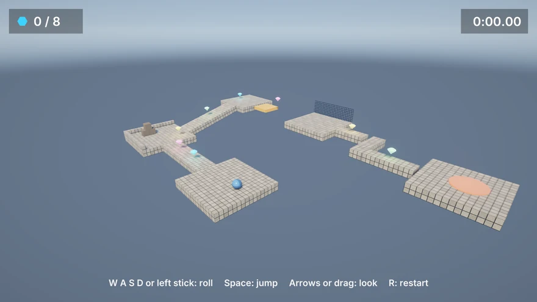
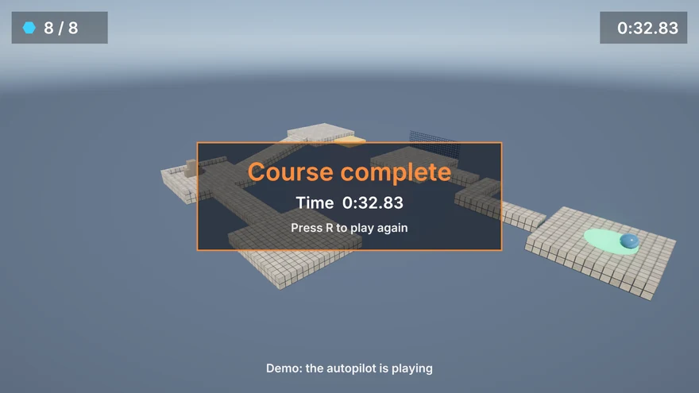

In Practice
Engine: The Game#
The renderer draws whatever is in the scene.
This chapter is about what puts things there and makes them move: entities, physics, input, sound, an interface.
The example is Marble, the game that comes with the LearnMetal Engine.
All of it, level included, is about eight hundred lines, and nearly every line is a call into something this chapter explains.

Entities and components#
An entity is nothing but an id.
Everything that makes it a marble, a lamp or a wall is in its components: plain structs, stored by the scene.
The engine brings the ones it has systems for: Transform, Camera, Light, MeshRenderer, RigidBody, Collider, ParticleEmitter.
A game adds its own, and the engine does not need to be told about them:
/// Something to collect. The entity also carries a mesh, a light and a trigger collider.
struct Gem {
var home: Vec3 // the gem bobs up and down around this point
var phase: Float // so that the gems do not all move in step
var color: Vec3
}
/// A platform that glides back and forth between two points.
struct MovingPlatform {
var from: Vec3
var to: Vec3
var period: Float // seconds for a round trip
}
/// Destroys its entity when the time runs out: for one-shot effects.
struct Lifetime {
var seconds: Float
}
/// Something to collect. The entity also carries a mesh, a light and a trigger collider.
struct Gem {
lm::Vec3 home{0, 0, 0}; // the gem bobs up and down around this point
float phase = 0; // so that the gems do not all move in step
lm::Vec3 color{1, 1, 1};
};
/// A platform that glides back and forth between two points.
struct MovingPlatform {
lm::Vec3 from{0, 0, 0};
lm::Vec3 to{0, 0, 0};
float period = 6; // seconds for a round trip
};
/// Destroys its entity when the time runs out: for one-shot effects.
struct Lifetime {
float seconds = 1;
};
There is no Gem class with a draw method and an update method.
A gem is an entity that is given five components, and each one makes a different part of the engine take notice of it:
for position in gemPositions {
let index = level.gemCount
level.gemCount += 1
let color = gemColors[index % 4]
let gem = scene.create("Gem")
scene.add(gem, Transform(position: position, scale: Vec3(0.9, 0.9, 0.9)))
scene.add(gem, MeshRenderer(mesh: gemMesh, material: gemMaterials[index % 4]))
scene.add(gem, Gem(home: position, phase: 0.9 * Float(index), color: color))
scene.add(gem, Light(type: .point, color: color, intensity: 5, range: 5))
var trigger = Collider.sphere(radius: 0.75)
trigger.isTrigger = true
scene.add(gem, trigger)
}
for (const Vec3& position : gemPositions) {
int index = level.gemCount++;
Entity gem = scene.create("Gem");
Transform transform;
transform.position = position;
transform.scale = Vec3{0.9f, 0.9f, 0.9f};
scene.add(gem, transform);
scene.add(gem, MeshRenderer{gemMesh, gemMaterials[index % 4]});
scene.add(gem, Gem{position, 0.9f * float(index), gemColors[index % 4]});
Light light;
light.color = gemColors[index % 4];
light.intensity = 5.0f;
light.range = 5.0f;
scene.add(gem, light);
Collider trigger = Collider::sphere(0.75f);
trigger.isTrigger = true;
scene.add(gem, trigger);
}
The renderer sees a mesh and a light.
Physics sees a trigger.
Only the game sees a Gem.
Behavior, then, is a loop over everything that has the right components.
This one is the entire animation of the gems:
// Gems turn and bob; their lights and triggers move with them.
let time = Float(engine.time.elapsed)
scene.each(Gem.self, Transform.self) { _, gem, transform in
transform.position = gem.home + Vec3(0, 0.18 * sin(time * 2 + gem.phase), 0)
transform.rotation = Quat(angle: time * 1.4 + gem.phase, axis: Vec3(0, 1, 0))
}
// Gems turn and bob; their lights and triggers move with them.
float time = float(engine.time.elapsed);
scene.each<Gem, Transform>([&](Entity, Gem& gem, Transform& transform) {
transform.position = gem.home + Vec3{0, 0.18f * std::sin(time * 2.0f + gem.phase), 0};
transform.rotation = axisAngle(Vec3{0, 1, 0}, time * 1.4f + gem.phase);
});
Inside the scene, the components of one type sit back to back in one array, so a loop like this reads memory in order.
The Lifetime component works the same way: a loop counts it down and destroys the entity at zero.
Destroying is always safe inside a loop, because the entity is only really removed at the end of the step, as the first chapter showed.
One Swift detail matters everywhere in game code.
Components are values.
scene[entity, RigidBody.self] gives you a copy, so either change it in place through the subscript, as in scene[cube, Transform.self]?.rotation = ..., or take a copy, change it and store it back.
Inside each, the closure's parameters are inout: what you change there is stored.
One C++ detail matters everywhere in game code.
scene.get<RigidBody>(entity) returns a pointer into the scene's storage, or nullptr.
The pointer stays valid until a component of the same type is added or removed, so use it and let it go; do not keep it in a member variable.
Bodies, colliders and triggers#
A Collider gives an entity a shape: a sphere, a box or a capsule.
By itself it is a static obstacle, which is all a floor or a wall needs.
Add a RigidBody and the entity moves.
Marble's level is made of boxes with colliders; the ramp is simply a box that is tilted.
scene.add(level.marble, Collider.sphere(radius: Level.marbleRadius))
var marbleBody = RigidBody(restitution: 0.35, friction: 0.03) // a rolling ball barely slows down by itself
marbleBody.linearDamping = 0.15
scene.add(level.marble, marbleBody)
scene.add(level.marble, Collider::sphere(Level::kMarbleRadius));
RigidBody marbleBody;
marbleBody.restitution = 0.35f;
marbleBody.friction = 0.03f; // a rolling ball barely slows down by itself
marbleBody.linearDamping = 0.15f;
scene.add(level.marble, marbleBody);
The physics is of the kind most games want, sometimes called arcade physics: gravity, bouncing, friction, things that push each other and stack.
It leaves out the hard parts on purpose.
Bodies do not spin when they are hit, there are no joints, and a very fast object can pass through a thin one.
When a game needs those, a dedicated physics library is the right tool.
That first omission would look wrong on a marble: a ball that slides without turning.
So the game turns it, by exactly the angle a ball of that size rolls through when it travels that far:
// The physics moves the marble but does not spin it. Turn it by the angle a ball of
// this size rolls through when it travels this far: distance divided by radius.
let flat = Vec3(body.velocity.x, 0, body.velocity.z)
let speed = simd_length(flat)
if speed > 0.05, let rotation = scene[level.marble, Transform.self]?.rotation {
let axis = simd_normalize(simd_cross(Vec3(0, 1, 0), flat))
let roll = Quat(angle: speed * dt / Level.marbleRadius, axis: axis)
scene[level.marble, Transform.self]?.rotation = simd_normalize(roll * rotation)
}
// The physics moves the marble but does not spin it. Turn it by the angle a ball of
// this size rolls through when it travels this far: distance divided by radius.
Vec3 flat{body->velocity.x, 0, body->velocity.z};
float speed = simd::length(flat);
if (speed > 0.05f) {
Vec3 axis = simd::normalize(simd::cross(Vec3{0, 1, 0}, flat));
marble->rotation = simd::normalize(axisAngle(axis, speed * dt / Level::kMarbleRadius) * marble->rotation);
}
Nobody watching can tell that the rotation is decoration.
A great deal of game programming is this: simulate what matters, fake the rest convincingly.
A collider marked as a trigger blocks nothing.
It only reports what enters it.
That is how the game knows a gem was touched or the goal was reached:
// Physics events. They arrive at the end of a physics step.
engine.physics.onTriggerEnter = { [unowned self, unowned engine] trigger, other in
if other != self.level.marble { return }
if engine.scene.has(Gem.self, trigger) {
self.collect(engine, trigger)
} else if trigger == self.level.goal && self.collectedCount == self.level.gemCount && !self.hasWon {
self.hasWon = true
engine.audio.play(self.sounds.win)
if let goal = engine.scene[self.level.goal, Transform.self] {
self.spawnBurst(engine, position: goal.position + Vec3(0, 0.5, 0), color: Vec3(0.4, 1.0, 0.5))
}
}
}
engine.physics.onContactBegin = { [unowned self, unowned engine] contact in
if contact.a != self.level.marble && contact.b != self.level.marble { return }
if contact.impactSpeed < 2.5 { return }
let volume = saturate(contact.impactSpeed / 12) // harder hits are louder
engine.audio.play(self.sounds.land, options: PlayOptions(volume: volume, pitch: 0.9 + 0.2 * volume))
}
// Physics events. They arrive at the end of a physics step.
engine.physics.onTriggerEnter = [this, &engine](Entity trigger, Entity other) {
if (other != level_.marble) return;
if (engine.scene.has<Gem>(trigger)) {
collect(engine, trigger);
} else if (trigger == level_.goal && collected_ == level_.gemCount && !hasWon_) {
hasWon_ = true;
engine.audio().play(sounds_.win);
spawnBurst(engine, engine.scene.get<Transform>(level_.goal)->position + Vec3{0, 0.5f, 0}, Vec3{0.4f, 1.0f, 0.5f});
}
};
engine.physics.onContactBegin = [this, &engine](const Contact& contact) {
if (contact.a != level_.marble && contact.b != level_.marble) return;
if (contact.impactSpeed < 2.5f) return;
PlayOptions options;
options.volume = saturate(contact.impactSpeed / 12.0f); // harder hits are louder
options.pitch = 0.9f + 0.2f * options.volume;
engine.audio().play(sounds_.land, options);
};
The second event fires when two solid things start touching, and says how fast they met.
The game uses it for one thing: a thump whose volume depends on how hard the marble landed.
Input: read once, use later#
The game never asks whether the W key is down.
It defines actions once, and from then on asks about those:
// Actions: the game asks "is jump pressed?" and never mentions a key or a button again.
let input = engine.input
input.bindAxis("moveX", negative: .a, positive: .d, gamepadAxis: .leftX)
input.bindAxis("moveY", negative: .s, positive: .w, gamepadAxis: .leftY)
input.bindAxis("lookX", negative: .left, positive: .right, gamepadAxis: .rightX)
input.bindAxis("lookY", negative: .down, positive: .up, gamepadAxis: .rightY)
input.bindButton("jump", keys: [.space], buttons: [.a])
input.bindButton("restart", keys: [.r], buttons: [.start])
input.bindButton("quit", keys: [.escape], buttons: [.back])
// Actions: the game asks "is jump pressed?" and never mentions a key or a button again.
Input& input = engine.input;
input.bindAxis("moveX", Key::A, Key::D, GamepadAxis::LeftX);
input.bindAxis("moveY", Key::S, Key::W, GamepadAxis::LeftY);
input.bindAxis("lookX", Key::Left, Key::Right, GamepadAxis::RightX);
input.bindAxis("lookY", Key::Down, Key::Up, GamepadAxis::RightY);
input.bindButton("jump", {Key::Space}, {GamepadButton::A});
input.bindButton("restart", {Key::R}, {GamepadButton::Start});
input.bindButton("quit", {Key::Escape}, {GamepadButton::Back});
Keyboard and gamepad feed the same action, so supporting both costs nothing more.
The first chapter warned that the fixed step is the wrong place to read input, because it runs zero, one or several times per frame.
So update reads, and remembers:
// Input is read here, once per frame, and remembered for the fixed steps.
if !isDemo {
wish = Vec2(input.axis("moveX"), input.axis("moveY"))
let length = simd_length(wish)
if length > 1 { wish /= length } // diagonals are not faster
if input.wasPressed("jump") { jumpBuffer = 0.15 }
if length > 0.1 { hasMoved = true }
}
// Input is read here, once per frame, and remembered for the fixed steps.
if (!isDemo) {
wish_ = Vec2{input.axis("moveX"), input.axis("moveY")};
float length = simd::length(wish_);
if (length > 1.0f) wish_ /= length; // diagonals are not faster
if (input.wasPressed("jump")) jumpBuffer_ = 0.15f;
if (length > 0.1f) hasMoved_ = true;
}
A jump is not remembered as "yes" but as "yes, for the next 0.15 seconds".
Press the button a moment before the marble lands and it still jumps on landing.
Players never notice this; they only notice games that do not do it.
fixedUpdate then turns what was remembered into motion:
// Push the marble where the stick points, relative to where the camera looks.
// (The autopilot thinks in compass directions instead: east and north.)
if !hasWon {
var forward = Vec3(-sin(cameraYaw), 0, -cos(cameraYaw))
var right = Vec3(cos(cameraYaw), 0, -sin(cameraYaw))
if isDemo {
let command = autopilot.steer(engine, level)
wish = command.push
if command.jump { jumpBuffer = 0.15 }
forward = Vec3(0, 0, -1)
right = Vec3(1, 0, 0)
if simd_length(wish) > 0.1 { hasMoved = true }
}
let push = right * wish.x + forward * wish.y
let control: Float = body.isGrounded ? 1 : airControl
body.velocity += push * (acceleration * control * dt)
// A speed limit on the ground plane only, so that falling stays fast.
var flat = Vec3(body.velocity.x, 0, body.velocity.z)
let speed = simd_length(flat)
if speed > maxSpeed {
flat *= maxSpeed / speed
body.velocity = Vec3(flat.x, body.velocity.y, flat.z)
}
jumpBuffer -= dt
if jumpBuffer > 0 && body.isGrounded {
body.velocity.y = jumpSpeed
jumpBuffer = 0
engine.audio.play(sounds.jump)
}
}
// Push the marble where the stick points, relative to where the camera looks.
// (The autopilot thinks in compass directions instead: east and north.)
if (!hasWon_) {
Vec3 forward{-std::sin(cameraYaw_), 0, -std::cos(cameraYaw_)};
Vec3 right{std::cos(cameraYaw_), 0, -std::sin(cameraYaw_)};
if (isDemo) {
Autopilot::Command command = autopilot_.steer(engine, level_);
wish_ = command.push;
if (command.jump) jumpBuffer_ = 0.15f;
forward = Vec3{0, 0, -1};
right = Vec3{1, 0, 0};
if (simd::length(wish_) > 0.1f) hasMoved_ = true;
}
Vec3 push = right * wish_.x + forward * wish_.y;
float control = body->isGrounded ? 1.0f : kAirControl;
body->velocity += push * (kAcceleration * control * dt);
// A speed limit on the ground plane only, so that falling stays fast.
Vec3 flat{body->velocity.x, 0, body->velocity.z};
float speed = simd::length(flat);
if (speed > kMaxSpeed) {
flat *= kMaxSpeed / speed;
body->velocity = Vec3{flat.x, body->velocity.y, flat.z};
}
jumpBuffer_ -= dt;
if (jumpBuffer_ > 0 && body->isGrounded) {
body->velocity.y = kJumpSpeed;
jumpBuffer_ = 0;
engine.audio().play(sounds_.jump);
}
}
"Forward" means away from the camera, so the controls stay natural while the camera orbits.
In the air the marble can still be steered, but only a little.
And look at the isDemo branch: the autopilot produces the same two things a player produces, a direction and a jump.
Because the game reads its input from two variables and not from the keyboard, replacing the player with a program took a handful of lines.
A platform that carries its passenger#
Halfway through the course a platform ferries the marble across a gap.
It is a kinematic body: it moves, but nothing can push it.
// The moving platform carries the marble across the gap between terrace and landing.
let ferryStart = Vec3(17, 2.25, -12.4), ferryEnd = Vec3(17, 2.25, -6.6)
level.ferry = builder.block("Ferry", center: ferryStart, size: Vec3(3, 0.5, 3), paint)
scene.add(level.ferry, RigidBody(type: .kinematic, friction: 1)) // it moves, but nothing can push it
scene.add(level.ferry, MovingPlatform(from: ferryStart, to: ferryEnd, period: 9))
// The moving platform carries the marble across the gap between terrace and landing.
Entity platform = builder.block("Ferry", Vec3{17, 2.25f, -12.4f}, Vec3{3, 0.5f, 3}, paint);
RigidBody ferryBody;
ferryBody.type = BodyType::Kinematic; // it moves, but nothing can push it
ferryBody.friction = 1.0f;
scene.add(platform, ferryBody);
scene.add(platform, MovingPlatform{Vec3{17, 2.25f, -12.4f}, Vec3{17, 2.25f, -6.6f}, 9.0f});
level.ferry = platform;
The tempting way to move it is to write a new position every step.
The marble would not come along: to the physics the platform would be teleporting, and a body that teleports has no velocity to pass on through friction.
A kinematic body has to be moved the way the physics understands, by its velocity:
// Moving platforms: a kinematic body goes where its velocity takes it, so the
// platform is steered by setting the velocity that leads to where it should be next.
let time = Float(engine.time.elapsed)
scene.each(MovingPlatform.self, RigidBody.self) { _, platform, platformBody in
let t = 0.5 - 0.5 * cos((time + dt) / platform.period * 2 * Float.pi) // 0 -> 1 -> 0, easing at the ends
let target = lerp(platform.from, platform.to, t)
platformBody.velocity = (target - platformBody.position) / dt
}
// Moving platforms: a kinematic body goes where its velocity takes it, so the
// platform is steered by setting the velocity that leads to where it should be next.
float time = float(engine.time.elapsed);
scene.each<MovingPlatform, RigidBody>([&](Entity, MovingPlatform& platform, RigidBody& platformBody) {
float t = 0.5f - 0.5f * std::cos((time + dt) / platform.period * 2.0f * kPi); // 0 -> 1 -> 0, easing at the ends
Vec3 target = lerp(platform.from, platform.to, t);
platformBody.velocity = (target - platformBody.position) / dt;
});
Work out where the platform should be one step from now, and set the velocity that gets it there in exactly one step.
The platform follows its path precisely, and the marble on top is carried by friction like any object resting on a moving one.
Sound without sound files#
Marble has six sound effects and not one audio file.
Each is computed when the game starts, from a waveform, a pitch that may slide, and a duration:
func note(_ waveform: Waveform, _ frequency: Float, _ duration: Float, _ volume: Float) -> SynthParams {
SynthParams(waveform: waveform, frequency: frequency, duration: duration, release: duration * 0.6, volume: volume)
}
// Two quick notes a fifth apart: the classic "got it" chime.
let collect = synthesizeSequence([note(.triangle, 880, 0.07, 0.35), note(.triangle, 1318.5, 0.22, 0.35)])
// A pitch that slides up reads as "going up"; down, as falling.
var jump = note(.sine, 260, 0.16, 0.4)
jump.frequencyEnd = 520
SynthParams note(Waveform waveform, float frequency, float duration, float volume) {
SynthParams params;
params.waveform = waveform;
params.frequency = frequency;
params.duration = duration;
params.volume = volume;
params.release = duration * 0.6f;
return params;
}
// Then, in Sounds::make():
// Two quick notes a fifth apart: the classic "got it" chime.
sounds.collect = share(synthesizeSequence({note(Waveform::Triangle, 880.0f, 0.07f, 0.35f),
note(Waveform::Triangle, 1318.5f, 0.22f, 0.35f)}));
// A pitch that slides up reads as "going up"; down, as falling.
SynthParams jump = note(Waveform::Sine, 260.0f, 0.16f, 0.4f);
jump.frequencyEnd = 520.0f;
sounds.jump = share(synthesize(jump));
The engine can load sound files too.
But a handful of numbers is enough for the sounds of a small game, and it keeps the repository free of files with unclear licenses.
Playing a clip hands it to the mixer.
The operating system asks for audio in small blocks, many times per second, on a thread of its own.
Each time, the mixer walks its list of playing sounds, reads the next piece of each clip, scales it by its volume and pan, and adds everything together.
That is all a software mixer is.
The speed at which a clip is read is its pitch, and it can change while the sound plays.
Two effects in the game are built on that.
Every gem plays the same chime a little higher than the one before, so collecting them sounds like climbing.
And the rumble of the rolling marble is one second of noise, looped, played at about a tenth of its speed:
// The rumble gets louder and higher with speed, and stops in the air.
let rolling = body.isGrounded ? saturate(speed / maxSpeed) : 0
engine.audio.mixer.setVolume(rollSound, 0.16 * rolling)
engine.audio.mixer.setPitch(rollSound, 0.08 + 0.1 * rolling)
// The rumble gets louder and higher with speed, and stops in the air.
float rolling = body->isGrounded ? saturate(speed / kMaxSpeed) : 0.0f;
engine.audio().mixer().setVolume(rollSound_, 0.16f * rolling);
engine.audio().mixer().setPitch(rollSound_, 0.08f + 0.1f * rolling);
The sound never starts or stops.
It plays all the time, and is simply silent while the marble stands still or flies.
The interface#
The counter, the clock and the messages are drawn with the engine's 2D canvas, which grew out of the Text Rendering and A 2D Game chapters.
It works in immediate mode: there are no label objects to create and keep up to date.
Every frame, draw says what should be on screen:
// Gems, top left.
canvas.rect(Vec2(16, 16), Vec2(132, 44), panel)
canvas.circle(center: Vec2(40, 38), radius: 9, rgb(0x3fd0ff), segments: 6) // six segments: a hexagon, close enough to a gem
let pulse = 22 + 8 * collectPulse
canvas.text("\(collectedCount) / \(level.gemCount)", Vec2(60, 38 - pulse * 0.6), size: pulse, white)
// The clock, top right.
let minutes = Int(playTime) / 60
let seconds = playTime - Float(minutes * 60)
let clock = String(format: "%ld:%05.2f", minutes, Double(seconds))
canvas.rect(Vec2(size.x - 136, 16), Vec2(120, 44), panel)
canvas.text(clock, Vec2(size.x - 28, 25), size: 22, white, align: .right)
// Gems, top left.
canvas.rect(Vec2{16, 16}, Vec2{132, 44}, panel);
canvas.circle(Vec2{40, 38}, 9, rgb(0x3fd0ff), 6); // six segments: a hexagon, close enough to a gem
std::snprintf(text, sizeof(text), "%d / %d", collected_, level_.gemCount);
float pulse = 22.0f + 8.0f * collectPulse_;
canvas.text(text, Vec2{60, 38 - pulse * 0.6f}, pulse, white);
// The clock, top right.
int minutes = int(playTime_) / 60;
float seconds = playTime_ - float(minutes * 60);
std::snprintf(text, sizeof(text), "%d:%05.2f", minutes, double(seconds));
canvas.rect(Vec2{size.x - 136, 16}, Vec2{120, 44}, panel);
canvas.text(text, Vec2{size.x - 28, 25}, 22, white, TextAlign::Right);
Positions are in points from the top left corner, and colors are the sRGB values a color picker shows.
The canvas turns the calls into triangles, and the renderer draws them at the end of the frame in as few draw calls as the textures allow.
The text comes from a distance-field font atlas, which is why size can be any number.
When a gem is collected, collectPulse jumps to one and fades, and the counter swells from 22 to 30 points and back without ever looking blurred.
A game that plays itself#
Start the game with --demo and nobody needs to touch it.
An autopilot rolls the marble through every gem, waits for the ferry, rides it, jumps for the gem above it, and finishes at the goal.
It is a list of waypoints and one steering rule.
The rule reads what a player would see, where the marble is and where the ferry is, and returns what a player would do:
// Steering: decide the velocity we would like (toward the target, slower when close),
// then push in proportion to how far the real velocity is from it. On the ferry the
// velocity we want is the ferry's own, plus whatever keeps us near its center.
let toTarget = target - marble.position
var wanted = Vec3(toTarget.x, 0, toTarget.z) * 2.5
let wantedSpeed = simd_length(wanted)
if wantedSpeed > waypoint.speed { wanted *= waypoint.speed / wantedSpeed }
if waypoint.action == .board || waypoint.action == .ride { wanted += ferry.velocity }
let correction = (wanted - marble.velocity) * 0.6
command.push = Vec2(correction.x, -correction.z) // north is -z
let length = simd_length(command.push)
if length > 1 { command.push /= length }
return command
// Steering: decide the velocity we would like (toward the target, slower when close),
// then push in proportion to how far the real velocity is from it. On the ferry the
// velocity we want is the ferry's own, plus whatever keeps us near its center.
Vec3 toTarget = target - marble->position;
Vec3 wanted = Vec3{toTarget.x, 0, toTarget.z} * 2.5f;
float wantedSpeed = simd::length(wanted);
if (wantedSpeed > waypoint.speed) wanted *= waypoint.speed / wantedSpeed;
if (waypoint.action == Action::Board || waypoint.action == Action::Ride) wanted += ferry->velocity;
Vec3 correction = (wanted - marble->velocity) * 0.6f;
command.push = Vec2{correction.x, -correction.z}; // north is -z
float length = simd::length(command.push);
if (length > 1.0f) command.push /= length;
return command;
A demo is pleasant to watch, but that is not why the autopilot exists.
Combined with one more option it becomes a test of the whole engine:
swift run Marble --demo --capture run.png --frames 2400
./build/marble --demo --capture run.png --frames 2400
With --capture the engine opens no window and no sound device.
It renders into a texture, advances time by exactly one sixtieth of a second per frame however long the frame really took, and after the given number of frames saves the last one as a PNG.
The run is the same every time.
The program's exit code then says whether the autopilot made it:
let result: Int32 = MainActor.assumeIsolated {
var defaults = EngineConfig()
defaults.title = "Marble"
let engine = Engine(config: EngineConfig.fromArguments(CommandLine.arguments, defaults: defaults))
let game = MarbleGame()
let result = engine.run(game)
if result == 0 && game.isDemo && engine.window == nil && !game.hasWon {
logError("the autopilot did not finish the course")
return 1
}
return result
}
exit(result)
int main(int argc, char** argv) {
lm::EngineConfig defaults;
defaults.title = "Marble";
lm::Engine engine(lm::EngineConfig::fromArguments(argc, argv, defaults));
MarbleGame game;
int result = engine.run(game);
if (result == 0 && game.isDemo && engine.window() == nullptr && !game.hasWon()) {
lm::logError("the autopilot did not finish the course");
return 1;
}
return result;
}
If the physics lets the marble fall through the ferry, if a trigger stops firing, if a platform of the level is moved out of reach, this command fails.
The repository's CI workflow runs it on every push, for both languages, and attaches the picture.

Tests that do not need a GPU#
Most of an engine is not graphics, and everything that is not graphics can be tested without a GPU: the math, the scene, input, mesh generation, collisions and physics, the fitting of the shadow cascades, the layout of the shared structs, sound synthesis and the mixer.
The engine keeps those parts free of Metal so that they can be.
func testABallFallsBouncesAndComesToRestOnTheFloor() {
let scene = Scene(), physics = Physics()
addStaticBox(scene, Vec3(0, -0.5, 0), Vec3(10, 0.5, 10))
let ball = addBall(scene, Vec3(0, 3, 0))
scene[ball, RigidBody.self]?.restitution = 0.5
run(physics, scene, seconds: 0.5)
XCTAssertLessThan(scene[ball, RigidBody.self]!.position.y, 3) // it fell
run(physics, scene, seconds: 6)
let body = scene[ball, RigidBody.self]!
XCTAssertEqual(body.position.y, 0.5, accuracy: 0.02) // resting on the floor, not sinking into it
XCTAssertLessThan(simd_length(body.velocity), 0.2)
XCTAssertTrue(body.isGrounded)
XCTAssertEqual(body.groundNormal.y, 1, accuracy: 1e-3)
}
TEST(a_ball_falls_bounces_and_comes_to_rest_on_the_floor) {
Scene scene;
Physics physics;
addStaticBox(scene, Vec3{0, -0.5f, 0}, Vec3{10, 0.5f, 10});
Entity ball = addBall(scene, Vec3{0, 3, 0});
scene.get<RigidBody>(ball)->restitution = 0.5f;
run(physics, scene, 0.5f);
CHECK(scene.get<RigidBody>(ball)->position.y < 3); // it fell
run(physics, scene, 6.0f);
const RigidBody& body = *scene.get<RigidBody>(ball);
CHECK_NEAR(body.position.y, 0.5, 0.02); // resting on the floor, not sinking into it
CHECK(simd::length(body.velocity) < 0.2f);
CHECK(body.isGrounded);
CHECK_NEAR(body.groundNormal.y, 1, 1e-3);
}
Run them with swift test.
Run them with ctest --test-dir build -L unit.
Tests like this one are what made it possible to change the physics without fear while Marble's level was being designed around it.
What to build next#
The best way to understand an engine is to make it do something it does not do yet.
Some ideas, roughly from easy to hard:
- A jump pad.
A trigger that sets the marble's upward velocity.
Everything you need is in this chapter. - A second level.
buildLevelis a list of boxes; write another one and switch to it when the goal is reached. - A lamp on the ferry.
Make a point light a child of the moving platform, and watchTransform.parentat work. - Sounds in space.
engine.playSoundAttakes a position and sets volume and pan from where the camera is.
Use it for the thump of the crates. - Shadows for a spot light.
One more shadow map, with a perspective projection, next to the cascades. - A file format for levels.
Read the boxes from a text file, then make the game reload it when it changes, the way the shaders already do.
Each of these touches one part of the engine and leaves the rest alone.
That, more than any single technique, is what the arrangement described in these chapters is for.
The last idea on the list has been taken further than a text file: the next chapter is about the engine's scene editor.